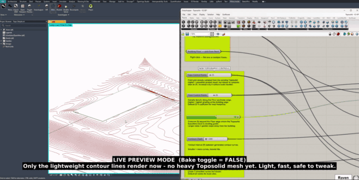
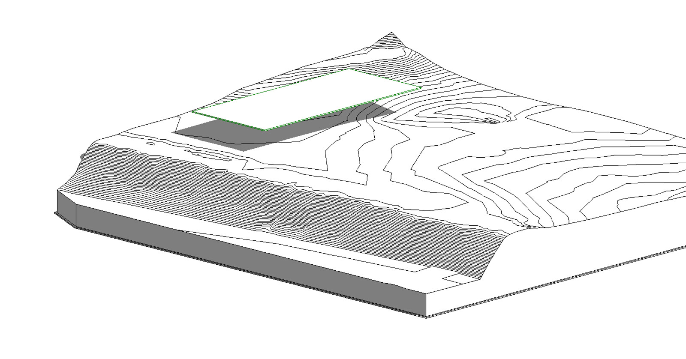
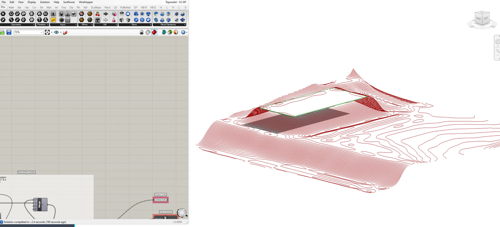
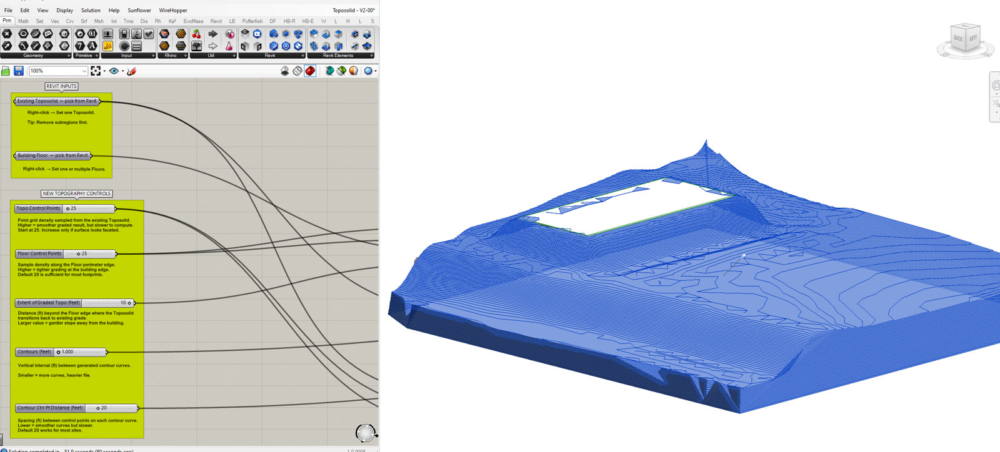

Grading the ground around a building in Revit is slow, manual work—nudging a toposolid's points by hand until the terrain sits flat against the floor and falls away naturally to existing grade. This script automates it.
Built for Rhino.Inside Revit, it reads an existing toposolid and a building floor straight from the live model and regrades the surrounding terrain in Grasshopper. A handful of sliders control the result—how many points drive the mesh, how far the regrade reaches past the building, and the contour interval—so a surface can go from a quick test to a clean, presentation-ready grade in seconds. When it looks right, one toggle bakes the new toposolid back into Revit. It lives in Little's Emerging Technologies script library.

In live-preview mode, only the lightweight contour lines redraw—fast and safe to tweak—as the script regrades the terrain around the building, before any heavy toposolid mesh is baked.

The starting point: an existing toposolid with its survey contours, and the building floor (green outline) sitting on the slope. Out of the box the terrain cuts awkwardly across the footprint—the grade the script is there to fix.

With the inputs set, the Grasshopper definition recomputes the surrounding ground—flattening a pad under the building and blending it back out through fresh contour lines, previewed live in the Rhino viewport before anything touches the model.

The finished grade, baked back into Revit as a new toposolid—a level building pad easing smoothly into the existing landform. On the left, the annotated script: labeled inputs up top and the control sliders that drive the whole result.
The tool runs on Rhino.Inside, which hosts Grasshopper inside a running Revit session. That means it operates on the live model directly—reading an existing toposolid and a building floor, and writing the result straight back—with no file export or geometry round-trip in between.
From those two inputs it rebuilds the terrain: it levels a pad to the floor's elevation, then regrades the surrounding ground so it eases away from the building and blends back into the original survey surface within a set distance. The whole grade is parametric. Control-point density governs how smooth the mesh is, the extent value sets how far the regrade reaches past the building, and the contour interval sets its resolution—so the same definition handles a gentle lawn or a tight retaining condition.
While you work, only lightweight contour lines redraw in the viewport, which keeps it fast and responsive; the heavy toposolid is generated only when you commit. The output is a native Revit toposolid—a real, schedulable model element ready for documentation, not an imported reference mesh.